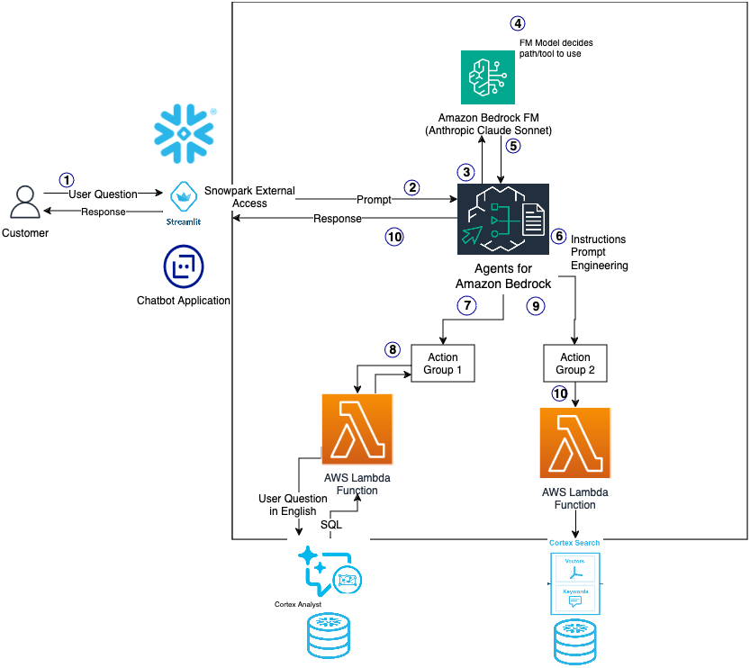

⏱️ Module Overview
Estimated time: 5 minutes
In this module, you'll learn about the key technologies and concepts we'll use throughout the workshop.
🤖 What is Generative AI?
Generative AI is a category of artificial intelligence that can create new content—text, images, code, and more—by learning patterns from existing data. Unlike traditional AI that classifies or predicts based on input, generative AI produces novel outputs.
Key Capabilities We'll Use
- Natural Language Understanding: AI that understands human questions
- Text Generation: AI that writes human-like responses
- Retrieval-Augmented Generation (RAG): AI that answers questions using your data
- Text-to-SQL: AI that converts questions into database queries
🏗️ Workshop Architecture
This diagram shows the complete architecture we'll build in this workshop. Amazon Bedrock Agents orchestrate user queries, routing them to the appropriate Snowflake Cortex service via AWS Lambda functions.

How It Works
- User asks a question via the Streamlit chatbot application
- Snowpark External Access sends the prompt to Amazon Bedrock
- Agents for Amazon Bedrock receives the prompt and routes to the Foundation Model
- Claude Sonnet decides which tool/action group to use based on the question
- Action Groups execute the appropriate Lambda function:
- Action Group 1: Calls Cortex Analyst for structured data questions (revenue, metrics)
- Action Group 2: Calls Cortex Search for unstructured document queries (FOMC minutes)
- Lambda functions connect to Snowflake and execute the Cortex queries
- Response flows back through the agent to the user
☁️ AWS Technologies
Amazon Web Services provides the foundational cloud infrastructure and AI services that power this workshop.
AWS Cloud Infrastructure
AWS provides the underlying compute, networking, and security infrastructure.
In this workshop, AWS hosts the Bedrock Agent orchestration layer and provides
secure connectivity between services. Your Snowflake account also runs on AWS
infrastructure in the us-west-2 region.
Amazon S3 (Simple Storage Service)
S3 is the backbone of data storage for this workshop. Workshop data (FOMC PDFs, revenue CSVs) is hosted in public S3 buckets and loaded into Snowflake stages. S3 provides durable, scalable object storage that integrates seamlessly with both AWS services and Snowflake's external stages.
Amazon Bedrock
A fully managed service that provides access to leading foundation models (Claude, Llama, Titan, and more) through a single API. Bedrock handles the heavy lifting of model hosting, scaling, and security—no infrastructure management required.
Agents for Amazon Bedrock
The primary orchestration layer for this workshop. Bedrock Agents can execute multi-step tasks, call external APIs (including Snowflake), and intelligently route questions to the right tools. They use Lambda functions to connect to Snowflake's Cortex Search and Cortex Analyst capabilities.
AWS Lambda
Serverless compute that runs the action groups for Bedrock Agents. Lambda functions connect to Snowflake, execute Cortex Search queries and Cortex Analyst requests, and return results to the agent—all without managing servers.
AWS Secrets Manager
Securely stores Snowflake credentials used by Lambda functions. This ensures sensitive information is never hardcoded and can be rotated without code changes.
❄️ Snowflake Technologies
Snowflake provides the data platform and AI capabilities that store and process your data.
Snowflake Cortex
A suite of AI features built into Snowflake that use large language models (LLMs) to understand unstructured data, answer questions, and provide intelligent assistance—all within your secure Snowflake environment.
Document AI
Native PDF and document parsing using SNOWFLAKE.CORTEX.PARSE_DOCUMENT().
Extracts text from PDFs, Word documents, and images without needing external tools.
Cortex Search
Vector-based semantic search that finds relevant information even when exact keywords don't match. Powers RAG (Retrieval-Augmented Generation) applications. Called by Bedrock Agents via Lambda to search FOMC documents.
Cortex Analyst
Converts natural language questions into SQL queries. Ask "What was revenue last month?" and get accurate results without writing SQL yourself. Called by Bedrock Agents to answer data questions.
Semantic Views
Define your data in business terms so Cortex Analyst understands what "revenue," "profit," and "region" mean in your context. Like a dictionary for your data.
Cortex Agents Optional
Native Snowflake agents that can orchestrate tools without external access. An alternative to Bedrock Agents when you want everything to run within Snowflake's security boundary.
🎯 Use Case: Unified Data Assistant
In this workshop, we'll build a conversational assistant powered by Amazon Bedrock Agents that can answer questions from two different types of data:
| Data Source | Type | Technology | Example Questions |
|---|---|---|---|
| FOMC Meeting Minutes | Unstructured (PDFs) | Document AI + Cortex Search | "What did the Fed say about inflation?" |
| Revenue Data | Structured (Tables) | Semantic View + Cortex Analyst | "What was profit by region last quarter?" |
🔀 Agent Options
This workshop uses Amazon Bedrock Agents as the primary orchestration layer:
| Option | Description | Benefits |
|---|---|---|
| Amazon Bedrock Agents Primary | AI orchestration running in AWS, calling Snowflake via Lambda |
|
| Snowflake Cortex Agents Optional | Native Snowflake orchestration, no external access required |
|
Both options use the same Snowflake data and Cortex tools (Search, Analyst)—only the orchestration layer differs.
📚 What You'll Learn
- Data Setup: Create databases, load data from S3, configure access
- Document Processing: Parse PDFs with Document AI, build vector search
- Semantic Modeling: Create a Semantic View for natural language SQL
- Agent Building: Deploy Bedrock Agents with Lambda action groups
- Application Development: Build interactive chat interfaces